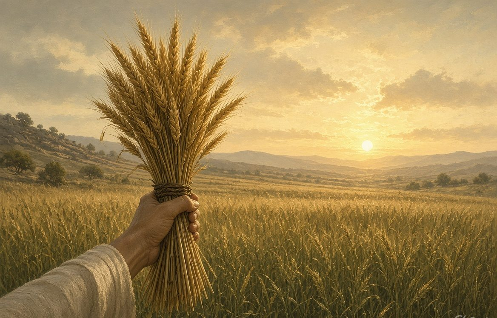
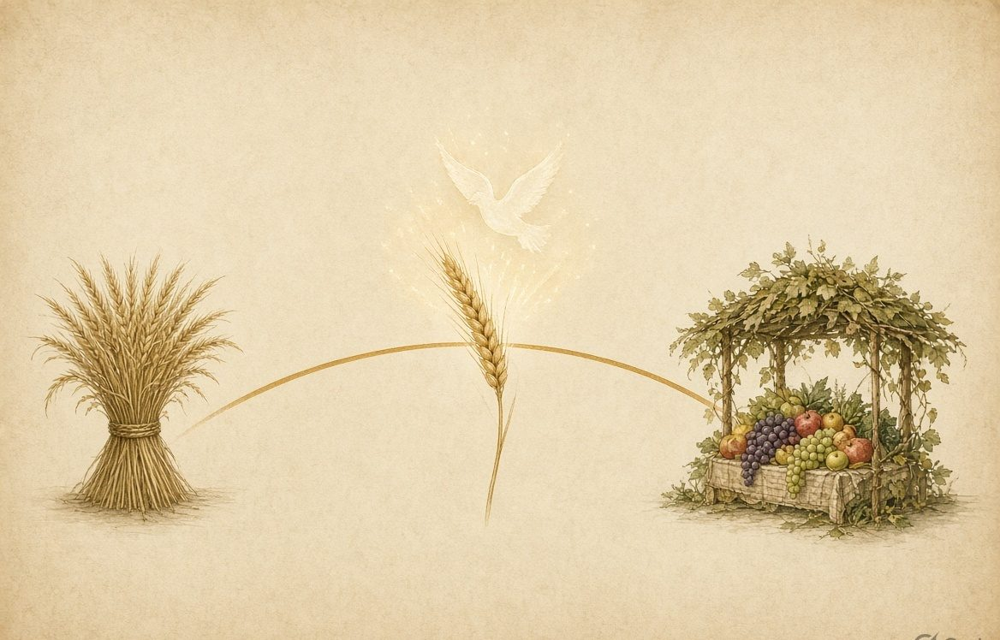
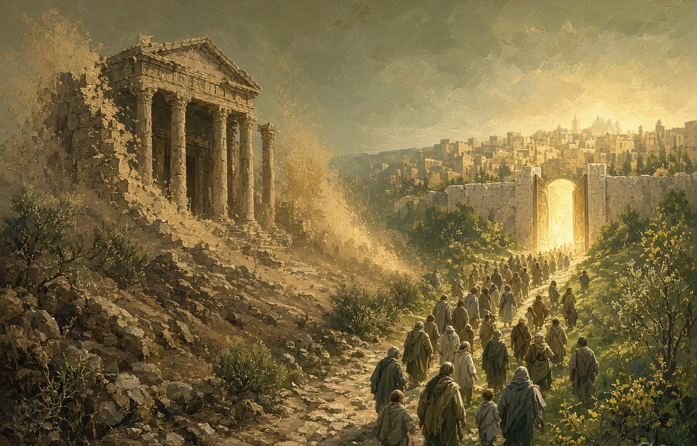

Firstfruits
Barley sheaf. The day after the Sabbath following Passover. Christ raised as the pledge of the whole field.
One field. Three waves. One body. Paul's timeline in 1 Corinthians 15 follows Israel's harvest calendar, not a stack of future corpse-revivals.

The sheaf is not a private miracle beside the field. It is the field's guarantee.
In the traditional reading, 1 Corinthians 15 is a future, end-of-history reanimation of individual corpses, staged in separate biological revivals. Read as Corporate Body View (CBV), the same chapter is one harvest of one people.
Paul is not tracking disembodied souls waiting for flesh. He is tracking the covenant body as it moves out of the old order in Adam and is gathered into the new order in Christ. The question is not “What happens to my corpse?” It is “What happens to the Body?” In 1 Corinthians 12:27 the body is the church. In chapter 15 that body is sown in one covenant identity and raised in another.

Bikkurim, Shavuot, Sukkot — one crop, pledged, tasted, then gathered.
Paul's order in 1 Corinthians 15:20–24 follows the agricultural calendar of Leviticus 23. Israel did not harvest a field one stalk at a time across unrelated ages. One crop was pledged, tasted, and then gathered. That is the shape of the first-century transition.
Barley sheaf. The day after the Sabbath following Passover. Christ raised as the pledge of the whole field.
Wheat harvest, fifty days on. The Spirit poured out. The body publicly begun, still awaiting the ingathering.
Fruit gathered at the end of the year. The parousia as the corporate gathering at the close of the old age.
On the day after the Sabbath following Passover, the priest waved one sheaf of the barley harvest before the Lord (Leviticus 23:9–14). The sheaf was not a private miracle detached from the field. It was the field's guarantee. Christ was raised on that day as the firstfruits of those who have fallen asleep (1 Corinthians 15:20).
The Corporate Body View starts here: the sheaf and the harvest are one crop. His resurrection is the pledge that the body in Him will be gathered.
Fifty days later Israel kept the wheat harvest. At Pentecost the Spirit was poured on the apostolic community (Acts 2). They received the arrhabōn, the down payment, and became “a kind of firstfruits of his creatures” (James 1:18).
This is not a second species of resurrection. It is the same body, now anointed and publicly begun, still awaiting the ingathering. See also Pentecost: The Fruit of the New Covenant.
Three waves in one field — not three resurrections of three different humanities.
At the end of the agricultural year the fruit was gathered in (Exodus 23:16). Paul sets the full gathering at Christ's parousia: “Christ the firstfruits, then those who are Christ's at his coming” (1 Corinthians 15:23).
CBV reads that coming as the corporate ingathering of the covenant people at the close of the Old Covenant age, not as a later biological rollout for scattered corpses. The feast itself is the picture of God dwelling with His people — developed in The Feast of Tabernacles and Parousia.

The wilderness interval: the old house coming down, the people being gathered in.
Between Ascension and Parousia lay the generational transition of AD 30–70, patterned on Israel's forty years in the wilderness. In that interval Christ reigned from the Father's right hand until the covenantal enemies were under His feet. The wilderness motif is traced in The Wilderness Motif.
“For he must reign until he has put all his enemies under his feet. The last enemy that will be abolished is death.” — 1 Corinthians 15:25–26
The death under His feet is not biological mortality. Return to dust belongs to humanity's created condition; it was not the enemy the Law empowered. Paul names the enemy at the end of the argument:
“The sting of death is sin, and the power of sin is the law.” — 1 Corinthians 15:56
Biological death draws no strength from the Law of Moses. The death that reigned was covenant death: alienation and condemnation in Adam, administered by the old covenant, “the ministry of death” (2 Corinthians 3:7).
That contrast is the heart of the Corporate Body View. The harvest calendar tells you when the waves fell. The body language tells you who was gathered.
“Then the end, when he delivers up the kingdom to God, even the Father…” — 1 Corinthians 15:24
The telos is the completion of the Old Covenant age, not the scrapping of the created world. When the temple system was removed in AD 70, the power of sin — the Law as a covenantal ministry — was publicly terminated. The veil was gone. Death, in the sense Paul has defined, was swallowed up in victory (1 Corinthians 15:54).
On the Corporate Body View, that victory is corporate before it is private:
Paul's timeline is not a divided theory of resurrections for separate human parts, and it is not a postponed event at the end of the physical universe. Under the Corporate Body View it is one harvest. Jesus Christ, the firstfruits, led His people out of the body of Adam — sin, law, and covenant death — and gathered them into the body of Christ, the indestructible life of the New Creation.
“He who has the Son has life.” — 1 John 5:12